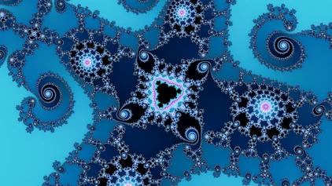
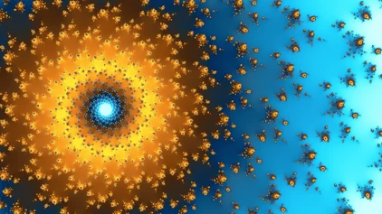
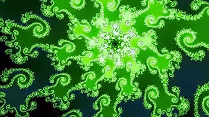
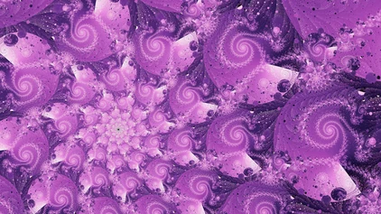
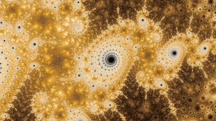
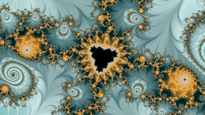

Multibrot d = 4z⁴ + c

Phoenixz² + c + p·z₋₁

Julia d = 4z⁴ + c

Mandelbrotz² + c

Juliaz² + c

Multibrot d = 4z⁴ + c
For many years my desktop background cycled through fractal wallpapers gathered from around the internet. Seeing the same ones over and over grew repetitive, and my daughter was fascinated specifically by dark pink fractals, so I built fractal-wallpapers, a program to find, color, and stylize new ones automatically. Producing a finished fractal wallpaper involves several artistic choices: picking a location, selecting and aligning palettes, stylizing, and layering post-processing. That work is usually done by hand, in tools like UltraFractal or Chaotica. This project doesn't try to match that level of hand-tuned artistry on any single image. The goal is a system that continually produces wallpapers I would want to use, spanning a wide range of structures, fractal families, color styles, and rendering effects. Computing the fractal itself is only a small part of that. The system also has to decide where to point the camera, how to turn what it sees into an image, and which of the results are worth keeping. Everything here lives in the flat complex plane: two-dimensional escape-time fractals, the most popular of which is the famous Mandelbrot set. Other beautiful fractal worlds are outside its scope, among them the 3D Mandelbulb, fractal flames, and quaternion Julia sets.
Most pictures on these pages carry a link that opens the fractal explorer at exactly the view you are looking at.
The system is organized around three decisions. Which location to render: a fractal family, its constants, and a frame in the complex plane. Which rendering mode and which palette to use there. And which of the finished candidates belong in the gallery. Each decision is one part of a pipeline, and each part feeds the next:

Finding good locations: a guided walk through each fractal family descends toward structure and away from both emptiness and pure chaos. A small neural network trained to predict my ratings of location quality scores each candidate as the walk goes. What it keeps is a growing pool of locations, each recorded as a frame in the complex plane and nothing more: no colors yet, no style (training judges).
Finding good wallpapers: each location in the pool is then drawn many ways, in several rendering modes and under a spread of palettes, with the picture's tones balanced automatically. A second neural network, trained on my ratings of finished pictures, scores each attempt, and every attempt joins a pool of candidate wallpapers with its score attached (rendering fundamentals, rendering modes, color palettes).
Gallery curation: a gallery of any size is chosen out of that pool, under constraints on quality and on the set as a whole. Near-duplicate pictures are collapsed, no single family of color crowds out the rest, and each rendering mode gets a minimum share of the gallery when the pool can supply it.
Two ideas run through all three parts. The neural networks (the judges) stand in for my taste at every point where a machine has to decide whether something is good; I rated by my own wallpaper preferences, and fine-tuning toward other tastes would be straightforward. And the useful state is cumulative: the location pool only grows, and each location keeps its strongest candidate renders, so curation can always be re-run over everything accumulated so far.
The whole system (search, rendering, training, curation) was built to run unattended on a single desktop machine with one ordinary GPU. Every candidate the pipeline judges is drawn small; a wallpaper that ships is rendered again at full size, with several samples to a pixel, so the collection can be regenerated at any resolution without repeating the search.
Everything here is backed by a working open-source repository, fractal-wallpapers, and every image on this site came out of it. The same renderer is also compiled to run in a browser, which is what draws the fractal explorer live on this site: every family, each rendering mode the article describes, and a broad selection of palettes, panned and zoomed by hand. The repository includes the code, the trained models, and the labeled datasets behind them. The finished wallpapers will be published here as galleries, free to download at full resolution.